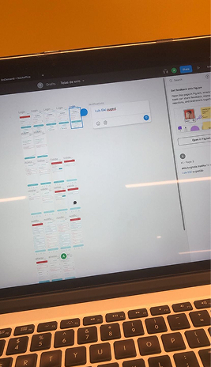
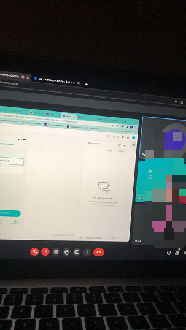
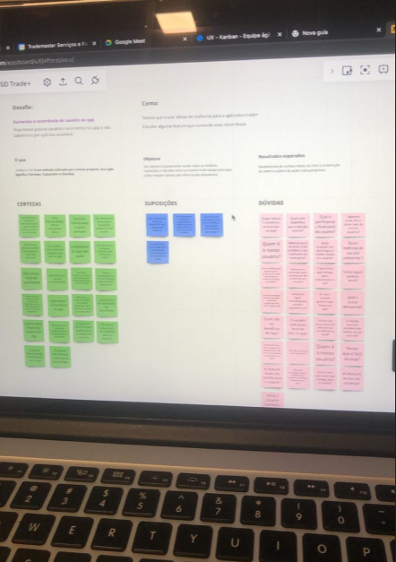
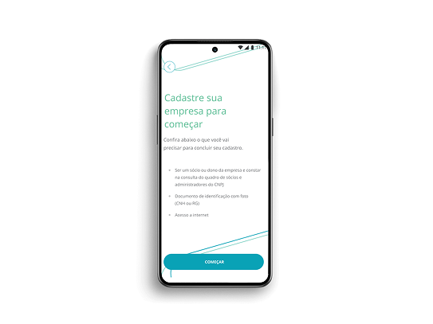
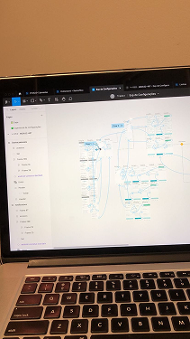

TRADE+ · PRODUCT DESIGN · UX/UI
Um cadastro de 30+ telas escondia um produto que ninguém via por inteiro
Comecei com uma tarefa operacional: migrar as telas do Adobe XD para o Figma. No caminho, descobri que o entrave real não era o tamanho do fluxo — era o conhecimento fragmentado do produto, um “telefone sem fio” entre as pessoas que o construíram.

Resumo do case
Um fluxo exaustivo que afastava mais do que convertia. Ver a descoberta →
☍Informação dispersa entre as áreas — um “telefone sem fio”. Entender o problema →
→Cadastro em duas etapas, fluxo documentado e um motivo pra voltar ao app. Ver as decisões →
Contexto
O produto e o que estava em jogo
A Trademaster é uma fintech de crédito B2B que conecta grandes indústrias e distribuidores a pequenos e médios varejistas — do mercadinho de bairro a lojas de construção, alimentos e bebidas. O diferencial: a Trademaster assume o risco de inadimplência, com um motor de crédito próprio baseado em dados da cadeia. O varejista compra com mais limite e prazo; a indústria vende mais sem carregar o risco.
O Trade+ é o app pelo qual o varejista acessa esse crédito: visualiza limites e extratos e faz o cadastro que dá início à relação.
O cadastro é a porta de entrada, o primeiro passo para o varejista começar a comprar com crédito. E era justamente nessa porta que o produto travava.
Descoberta · O problema real
Não era só um cadastro longo. Era um produto que ninguém enxergava por inteiro.
O pedido inicial era operacional: passar as telas do Adobe XD para o Figma. Migrando tela por tela, o padrão apareceu — faltavam telas. Mexendo no próprio app, encontrei fluxos que existiam em produção mas não estavam em lugar nenhum do arquivo de design.
Ao reunir e organizar essas telas, o quadro ficou claro: textos de preenchimento, dados repetidos, decisões soltas feitas por devs sem processo de UX — cada pessoa somando uma camada por cima da anterior. Um “telefone sem fio” de requisitos onde ninguém detinha a visão completa. Minha tarefa deixou de ser migrar telas e passou a ser reconstruir a visão do produto inteiro.
“Mais fácil conseguir um green card do que se cadastrar no app.”
— relato real de um usuário

Descoberta · Fontes de conhecimento
Reconstruindo uma visão compartilhada
Se o problema era conhecimento espalhado, a primeira entrega foi juntá-lo. Fui atrás de quatro fontes reais — cada uma respondendo a uma parte diferente da mesma pergunta: por que este cadastro ficou assim, e o que ele precisa ser?
Pedi o propósito de cada dado do fluxo: por que ele é solicitado e qual regra o sustenta. Muitos campos existiam por inércia, sem ninguém ter revisitado o conjunto.
Levantei com o time de dev o comportamento real: tela com mais erros, onde as pessoas clicavam, tempo gasto por tela e falhas recorrentes — a evidência de onde o fluxo travava.
O time de Marketing detinha o conhecimento acumulado sobre o varejista atendido. Foi dessa base que construí a persona — uma representação inicial, não uma pesquisa direta com usuário final.
Levantei a reclamação nº 1, o que o app não resolvia e o que o usuário esperava do cadastro — o termômetro qualitativo do problema, vindo de quem fala com o cliente todos os dias.

Descoberta · O que precisávamos descobrir
Três perguntas que ainda não tinham resposta
Antes da matriz, as perguntas. Com tanto conhecimento disperso, precisei separar o que de fato sabíamos do que só supúnhamos — e nomear o que faltava investigar:
Para responder sem achismo, conduzi uma Matriz CSD numa dinâmica online com Produto, Desenvolvimento, Marketing e Suporte — cada área contribuindo em tempo real.

Descoberta · Entendendo o usuário
Eduardo, o varejista por trás do cadastro
Uma das dúvidas da matriz era exatamente quem é o usuário. A persona foi construída a partir do conhecimento acumulado pelo time de Marketing sobre o varejista atendido — uma representação inicial que dá rosto às decisões, e que poderia (e deveria) ser aprofundada com pesquisa direta com usuários numa fase seguinte.
Descoberta · Síntese
O que a investigação revelou
Cruzando a Matriz CSD, os dados internos e as reclamações, cinco pontos ficaram claros — e passaram a guiar cada decisão.
Decisões · Frente 1
Reconstruindo o cadastro, decisão por decisão
Cada mudança partiu de uma evidência concreta e virou uma decisão com intenção clara. O registro abaixo é o log dessas decisões — o que existia antes, o que mudou e por quê.
Cadastro em duas etapas
Dados básicos primeiro; ativação de crédito depois, só para quem quiser. As 30+ telas lineares que geravam abandono viraram um caminho curto com um segundo passo opcional.

Otimização de campos
Só o essencial permaneceu — todo campo sem regra de negócio por trás foi cortado.
Textos e ícones acessíveis
Linguagem simples e ícones reconhecíveis no lugar de rótulos ambíguos.
Validação antecipada
Validação do contato logo no começo do fluxo, e não na última tela.
Documentação do fluxo
Documentação ponta a ponta como fonte única de verdade para produto e desenvolvimento.
Decisões · Frente 2
Novas funcionalidades mapeadas pela pesquisa
A maioria queria explorar o app antes de pedir crédito. Por isso cada funcionalidade abaixo dá um motivo de uso recorrente — não só um fluxo de aprovação.
Acompanhamento de limite
Limite utilizado e disponível sempre visível na home, com ajuste de percentual.
Boletos direto no app
Aba de boletos dentro do próprio app, sem passar pelo desktop.
Configurações de dados básicos
Área de configurações pra conferir e ajustar os dados quando quiser.
FAQ para suporte rápido
FAQ no app, sem depender de atendimento humano.
Resumo das decisões
Três frentes de trabalho
Solução · A jornada
Redesenhando a jornada, ponta a ponta
Percorri todo o cadastro como usuário, documentando cada etapa, os estados de erro e os pontos de acessibilidade — e reconstruí o fluxo inteiro digitalmente. Cada decisão do usuário passou a ter um caminho claro, com estados de erro e confirmação mapeados.


Solução · A nova experiência
Telas de alta fidelidade, navegáveis
Entreguei o redesenho em alta fidelidade e navegável, para as partes interessadas visualizarem e interagirem com as soluções antes da implementação — cobrindo tanto o cadastro redesenhado quanto as novas funcionalidades.

Impacto · O que mudou
Antes e depois do cadastro
Mais do que uma lista de entregáveis, o projeto mudou a estrutura do produto e do trabalho em torno dele.
Impacto · Prova real
O que os usuários disseram depois das mudanças
Avaliações orgânicas na loja de aplicativos após o redesenho entrar no ar. Não são teste de usabilidade formal — mas são a voz de quem usa o app no dia a dia, e apontam na mesma direção das decisões: fluxo mais fácil e intuitivo.
Aplicativo muito intuitivo e fácil de usar, top! Parabéns Trademaster, ajudando o varejo a vender mais!
Super fácil e intuitivo.
Excelente aplicativo. Cumpre tudo aquilo que promete.
Extremamente intuitivo, fácil de usar e muito bom serviço prestado!
Impacto · Próximos passos
O que ainda precisava ser validado
As avaliações da loja são um sinal real e animador, mas orgânico e espontâneo — não substituem teste de usabilidade formal nem um acompanhamento estruturado com métricas pós-entrega, que não fizeram parte do escopo. Mesmo sem esses testes, cada decisão teve uma base concreta:
- Abandono no fluxo em duas etapas, comparado ao cadastro anterior
- Volume de reclamações no suporte
- Uso das novas funcionalidades (limite, boletos, FAQ)
- Tempo de conclusão do cadastro
Medir esses indicadores seria o primeiro passo de uma fase seguinte, junto com pesquisa direta e testes com usuário final.
Aprendizado
O que ficou desse projeto
- Antes de redesenhar qualquer tela, precisei reconstruir a visão do produto inteiro com quatro áreas que nunca tinham sentado juntas.
- O time entendeu, na prática, como UX se conecta a negócio e a dado, não só a “telas bonitas”.
- Implantei rotinas de design junto ao squad — documentação e discovery passaram a fazer parte do jeito de trabalhar.
- Soluções entregues em alta fidelidade e navegáveis, prontas para a próxima etapa de validação.
Não consegui, no escopo, rodar entrevistas e testes de usabilidade após as decisões finais, nem acompanhar o impacto com dados reais. Fica como o próximo passo mais claro — e como aprendizado sobre defender espaço para validação desde o começo do projeto.
Tem um fluxo assim no seu produto?
Me conta o contexto — respondo em até um dia útil.